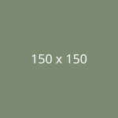

Memahami Konsep Box Model dalam Desain Web

Setiap elemen dalam dokumen HTML dapat dibayangkan sebagai sebuah kotak persegi panjang. Box model terdiri dari empat lapisan penting: Content (konten teks atau gambar), Padding (ruang kosong di dalam border), Border (garis batas tepi elemen), dan Margin (jarak pemisah antar elemen). Properti box-sizing: border-box memudahkan perhitungan lebar elemen dengan menyertakan padding dan border ke dalam total dimensi.
Teknik CSS Float dan Penggunaan Clearfix
Properti float: left atau float: right memungkinkan elemen bergeser ke sisi tertentu sehingga elemen teks atau konten lain mengalir di sekitarnya. Namun, elemen float keluar dari alur dokumen normal, yang dapat menyebabkan container induk kehilangan tinggi (collapse). Untuk mengatasinya, teknik clearfix menggunakan pseudo-element :after dengan clear: both diterapkan.
Pentingnya HTML5 Semantics Elements
Penggunaan tag semantik seperti <header>, <nav>, <section>, <article>, <aside>, dan <footer> memberikan makna struktural yang jelas pada dokumen web. Hal ini mempermudah perayap mesin pencari (SEO), meningkatkan aksesibilitas bagi screen reader, dan membuat struktur kode lebih mudah dipahami oleh pengembang lain.